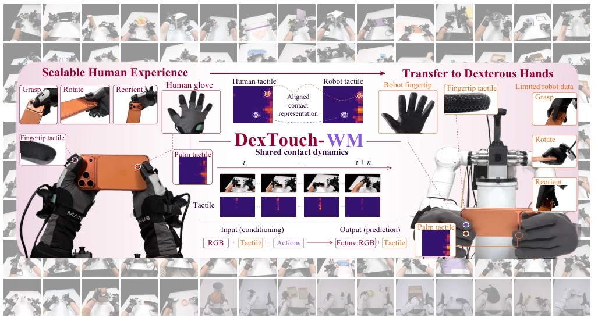
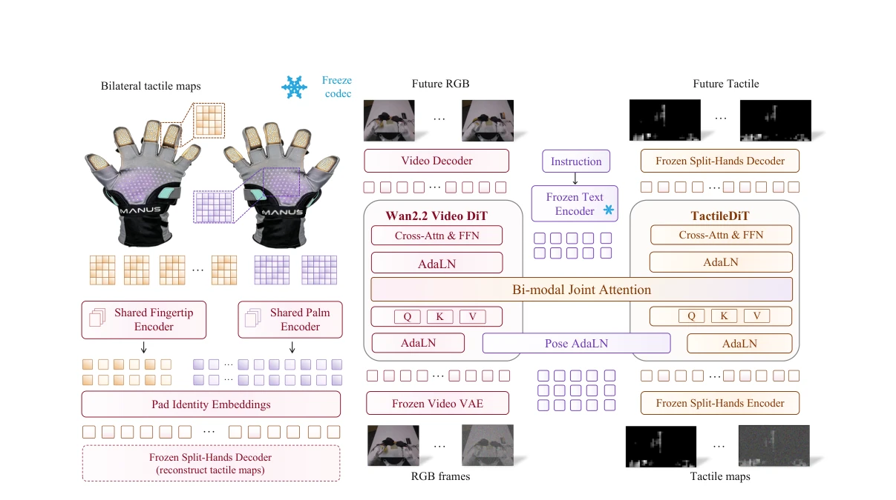
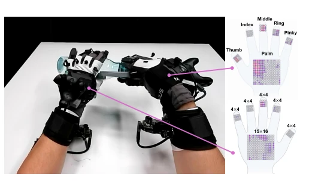
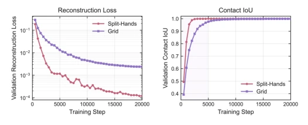
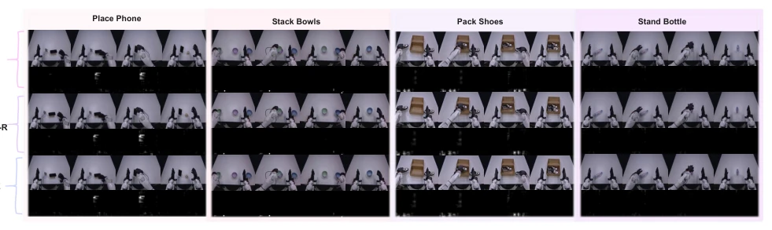

DexTouch-WM: Learning Action-Conditioned Tactile World Models from Human Touch for Dexterous Robot Manipulation
Yan Qin, Yue Chen, Wenwei Lin, Shujia Liu, Chuqiao Lyu, Kailun Su abspdf
论文点评Review
这篇论文试图用人类触觉数据“喂饱”机器人世界模型，算是给稀缺的机器人触觉数据找了个“平替”。核心逻辑是人和机器人手套布局对齐，动作空间重定向，让人类数据能监督机器人模型。亮点在于确实证明了增加人类数据能提升机器人域预测，尤其是接触动态。但毒舌一下：合成数据生成策略（Table IV）效果参差不齐，有的策略甚至变差了，说明“想象”的世界未必能直接指导“现实”操作。另外，100 小时人类数据虽然多，但任务集与机器人测试集不重叠，这种跨任务迁移的泛化能力是否真的可靠，还是过拟合了人类交互模式，值得商榷。总之，是个有趣的 scaling law 探索，但离“通用”还远。
This paper attempts to "feed" robot world models with human tactile data, effectively finding an "alternative" for scarce robot tactile data. The core logic aligns human and robot glove layouts and redirects action spaces, enabling human data to supervise robot models. The highlight is indeed demonstrating that increasing human data improves robot domain prediction, particularly contact dynamics. However, to be critical: the synthetic data generation strategies (Table IV) show mixed results, with some strategies even degrading, suggesting the "imagined" world may not directly guide "real" operations. Furthermore, although 100 hours of human data is substantial, the task sets do not overlap with the robot test set. Whether this cross-task transfer generalization is truly reliable, or whether it overfits human interaction patterns, is debatable. In conclusion, it is an interesting scaling law exploration, but far from "general".
Tactile-rich dexterous manipulation relies on tactile feedback, yet collecting tactile data on real robots is costly and constrained by specific sensor configurations [4], [6]. Existing works mostly rely on robot teleoperation, leading to small datasets that are difficult to scale [12], [32]. Although existing research has attempted to utilize human data [1], [24], most are only used for imitation learning or representation alignment, without treating touch as a prediction target. DexTouch-WM aims to address this challenge: through shared sensing layouts (gloves consistent with manipulators) and action remapping, human interaction can directly supervise robot world models. This breaks the limitation of data collection being bound to the robot embodiment, providing scalable contact dynamics priors for dexterous manipulation, and compensating for the limitation of pure visual models that cannot perceive contact states [5].
The overall process is divided into data alignment and model construction. First, humans wear Moxian gloves, and robots are equipped with 320 taxel arrays with the same layout, ensuring consistency in the tactile observation space. Actions are redirected to the robot space via inverse kinematics, achieving spatiotemporal alignment. The model architecture adopts MoT Mixture of Experts [10], coupling a pre-trained video expert (Wan2.2) with a lightweight tactile expert. Innovations include: 1) Anatomy-aware tactile Tokenization (Split-Hands), encoding fingertips and palms separately to preserve anatomical structure priors; 2) Anchored residual tactile Latents, predicting contact changes relative to the initial state rather than static pressure; 3) Dual-rate Action Conditioning, where the video stream receives actions in 4-frame blocks and the tactile stream receives them at the frame level, preserving fine-grained temporal cues. Training employs conditional flow matching [11], jointly optimizing visual and tactile prediction without requiring additional alignment loss, and freezes visual and tactile codecs to maintain stability.

Fig. 1. Overview of DexTouch-WM. Given initial observations and an action sequence, DexTouch-WM jointly predicts future video and tactile maps. These human trajectories provide a scalable contact-dynamics prior for subsequent robot-domain adaptation.

Fig. 2. DexTouch-WM architecture. Left: shared fingertip and palm encoders tokenize bilateral tactile maps while pad identity embeddings preserve anatomy. Right: a pretrained video expert and a tactile expert exchange information through bi-modal joint attention, retaining modality-specific AdaLN and feed-forward pathways. Instruction features and pose AdaLN condition generation. Frozen visual and tactile codecs encode observations and decode future RGB and pressure maps.

Fig. 3. Wearable tactile sensing layout used in training. Each glove records 360 taxels. The model keeps 320 of them: five fingertip pads (4×4) and one palm pad (15×16). The same 320-taxel layout is mounted on the robot hand, so both domains share a tactile observation space.
Experiments were conducted with fixed 5 hours of robot data while adding 0-100 hours of human data. Results show visual PSNR improved from 23.47 to 27.10, and contact prediction F1 rose from 0.55 to 0.71, demonstrating that human data effectively improved robot domain generalization (Table I). As a policy evaluator, the model mixed with human data (WM-Mix) showed a correlation with real-world evaluation (Pearson 0.844) superior to the pure robot model (0.646) (Table III). As a data generator, synthetic trajectories can assist in training certain policies, but the effect depends on the specific policy, even causing performance degradation in some policies (Table IV). Ablation studies indicate that the Split-Hands structure outperforms the Grid baseline, and AdaLN outperforms Cross-Attn action injection.

Fig. 4. Tactile representation ablation. Validation reconstruction loss and Contact-IoU for Grid and Split-Hands.

Fig. 5. Generated visuo-tactile demonstrations. Columns are the four downstream tasks. Rows compare a held-out real episode (GT) with action- conditioned rollouts from WM-Robot and WM-Mix. Each cell shows synchronized RGB frames and tactile maps from one trajectory. These clips are the synthetic demonstrations used for policy training, not in-model policy evaluation.